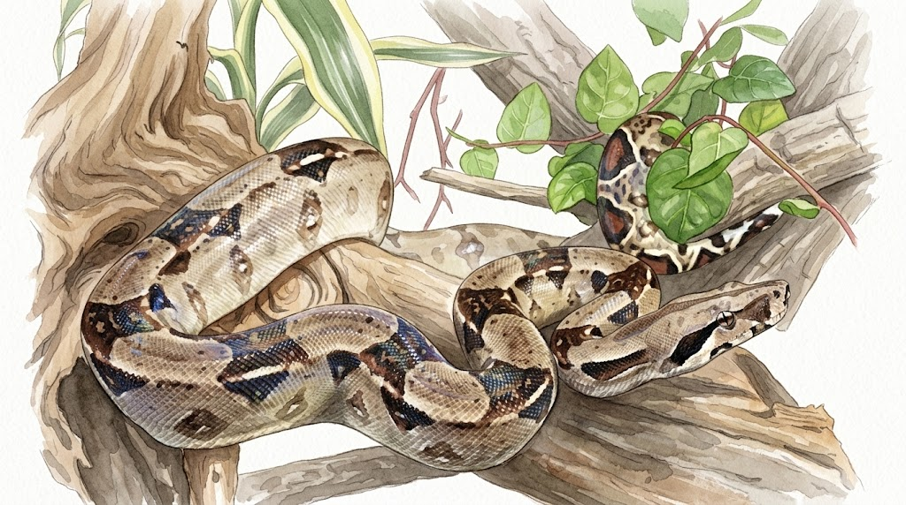
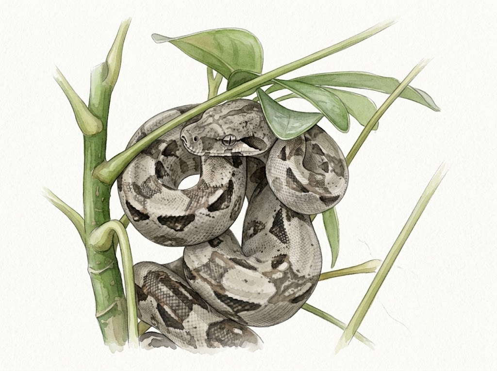
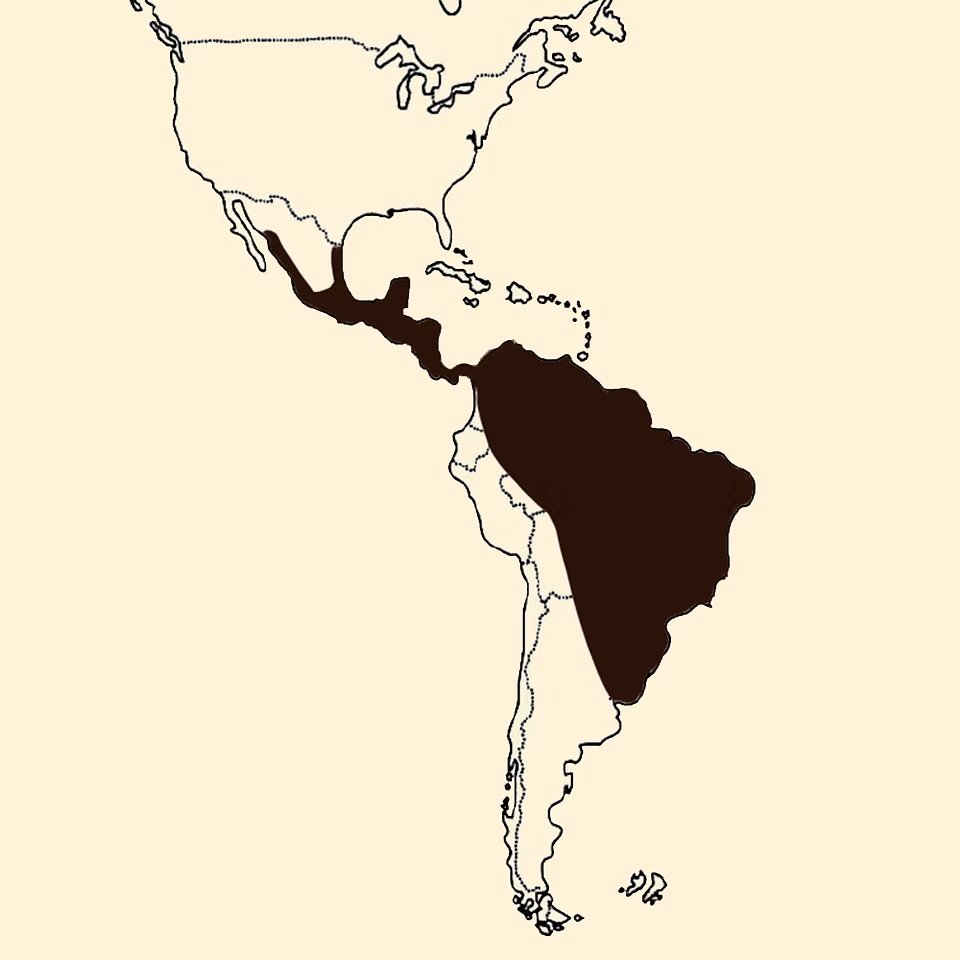

BIOLOGÍA
El género Boa
Las boas siempre me han parecido una de las verdaderas joyas de nuestro continente. Su imponente presencia y su gran capacidad de adaptación las convierten en reptiles fascinantes. Para mí, ir descubriendo de dónde vienen, cómo crecen o cómo se reproducen no es solo acumular datos, sino una forma de entenderlas mejor y aprender a respetarlas en su totalidad.
Un vistazo a sus rasgos y anatomía
Si nos metemos un poco en la parte biológica, esta serpiente pertenece a la familia Boidae y es una especie tropical no venenosa que ha perfeccionado la constricción como método de caza.
Físicamente tiene una cabeza triangular muy característica, con ojos pequeños y pupilas verticales que se adaptan súper bien a los cambios de luz. Su cuerpo es robusto, alargado y cubierto de escamas que le dan una flexibilidad increíble. Algo interesante es fijarse en la zona de la cloaca, cerca del final de la cola: ahí los machos suelen tener unos espolones bastante más desarrollados que las hembras. Además, su coloración es un espectáculo. El fondo varía entre tonos grises y cafés, pero lo mejor son las famosas "sillas", esos patrones oscuros en su lomo que funcionan casi como una huella dactilar; no hay dos boas iguales.

De norte a sur: ¿Una o varias especies?
Durante mucho tiempo se pensó que existía una sola gran especie (Boa constrictor) distribuida desde el norte de México hasta Argentina. Sin embargo, la genética moderna nos ha enseñado que en realidad estamos ante un complejo de especies distintas:
- Boa sigma (Boa del Pacífico mexicano): Es la que habita en la vertiente del Pacífico, en estados como Sonora y Sinaloa, llegando hasta las Islas Marías.
- Boa imperator (Boa centroamericana): Se distribuye por el Golfo y el sureste mexicano (en estados como Tamaulipas o Quintana Roo), extendiéndose por Centroamérica y el noroeste de Sudamérica.
- Boa constrictor (Boa de cola roja): Queda reservada principalmente para las poblaciones de Sudamérica, al este de los Andes.
Precisamente por estar tan extendidas y cercanas a la gente, en México se las conoce por distintos nombres según la región: boa, mazacuata o simplemente boa constrictora, lo que demuestra lo presentes que están en nuestro entorno y en nuestra cultura.

¿Cuánto crecen y cuánto viven?
Al nacer, las crías miden entre 30 y 50 cm. A partir de ahí, su crecimiento continúa durante toda su vida, aunque el ritmo se frena al llegar a la madurez. Factores como el espacio, la temperatura y la alimentación influyen bastante en cómo se desarrolla cada individuo.
- Diferencia de tamaños: Las hembras son significativamente más grandes y robustas que los machos (un dimorfismo sexual muy común en serpientes). En especies como Boa constrictor o Boa imperator, las hembras grandes pueden rozar o superar los 3.5 a 4 metros, mientras que Boa sigma suele mantenerse en tallas algo más moderadas.
- Longevidad: En cautiverio, no es raro que vivan 20 o 30 años (e incluso más). Esto cambia por completo la perspectiva de quien decide mantener una: no es una mascota temporal, sino un compromiso a largo plazo que requiere constancia.
Datos curiosos sobre su reproducción
Aunque la edad exacta de madurez varía según la especie y la nutrición, en general los machos maduran antes que las hembras:
- Machos: Suelen considerarse maduros alrededor de los 100 cm de longitud (aproximadamente a los 18 meses).
- Hembras: En cautiverio se recomienda esperar a que alcancen al menos los 180 cm y unos 3 años de edad antes de reproducirlas. Esto no es solo un dato técnico, sino una práctica fundamental para proteger su salud.
Un aspecto fascinante es que son ovovivíparas: las crías se desarrollan dentro del cuerpo de la madre protegidas por membranas sin cáscara rígida, naciendo completamente formadas. En términos simples, ¡es como si la madre funcionara como una incubadora viva! Las camadas pueden ser muy numerosas, llegando en casos excepcionales a 80 crías.
Si algo de esto te llamó la atención, o si has observado algo distinto en tus propias experiencias, me interesa leerlo. Siempre salen cosas interesantes cuando se comparan puntos de vista.
Hasta la próxima.